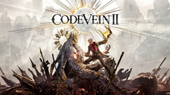

Yakuza 3:Dark Ties

Este mes de Febrero ha salido el Yakuza Kiwami 3 & Dark Ties, una entrega muy
esperada por los fans en la que la gran novedad es el rediseño del combate para eliminar el exceso de bloqueos de la IA,
introduciendo el estilo Ryukyu junto al clásico Dragón de Dojima. Además, se ha expandido mini
juegos como la gestión del orfanato Morning Glory, permitiendo actividades domésticas como cocinar o
cultivar para fortalecer los vínculos con los niños. Por su parte, Dark Ties va a ser una expansión
independiente protagonizada por Yoshitaka Mine el personaje más relevante de esta entrega, que narra
su ascenso en el Clan Tojo con un estilo de pelea basado en el shootboxing y un tono narrativo más
oscuro. El pack de este maravilloso videojuego se completa con misiones de batallas campales de
hasta 100 enemigos y la llegada de subtítulos oficiales a varios idiomas, entre ellos al castellano.
El Profesor Layton y el Nuevo mundo a Vapor
El Profesor Layton y el Nuevo Mundo a Vapor llegará finalmente a Nintendo Switch (y presumiblemente a su sucesora)
a lo largo de este 2026, situando su historia un año después de El Futuro Perdido en la tecnológica ciudad estadounidense de Steam Bison.
En esta entrega de estética steampunk, un Luke más maduro solicita la ayuda del Profesor para resolver un misterio que involucra al enigmático
Gunman King Joe, presentando la mayor cantidad de acertijos de toda la franquicia gracias al nuevo diseño del grupo de expertos QuizKnock. El juego
promete revitalizar la saga con un apartado visual en 3D muy pulido y una narrativa que profundiza en la evolución de la amistad entre sus protagonistas
tras su tiempo separados.
Resident Evil:Requiem

La expectación por Resident Evil Requiem está en su punto máximo, especialmente tras
el reciente
tráiler del State of Play que mostró el regreso emocional a las ruinas de Raccoon City. Una de las
novedades más comentadas es el sistema de "personalidad" de los zombis, los cuales ahora retienen
rutinas de su vida pasada que afectan directamente al sigilo y al combate. Además, se ha confirmado
que la descarga ocupará 72.88 GB, convirtiéndolo en el juego más pesado de la saga, y que incluirá
colaboraciones curiosas como un Porsche Cayenne Turbo GT que Leon podrá conducir en ciertas
secciones de mundo abierto. Sin embargo, Capcom ha tenido que lidiar con una filtración masiva del
final esta última semana debido a la distribución anticipada de copias físicas, por lo que la
recomendación oficial es navegar con cautela por redes sociales hasta el próximo viernes.
Code Vein 2

Code Vein II finalmente se lanzó el pasado 30 de enero de 2026 para PS5, Xbox Series X|S y PC,
consolidándose como una secuela ambiciosa que expande el universo postapocalíptico de las Apariciones.
Esta entrega destaca por introducir escenarios mucho más amplios y un sistema de combate evolucionado que permite
la asimilación con compañeros para ejecutar ataques combinados devastadores, todo bajo un apartado técnico renovado que aprovecha el hardware actual.
Aunque el lanzamiento tuvo algunos problemas de optimización en PC que ya se están corrigiendo con parches, el juego ha sido bien recibido por su
profunda personalización y una trama que profundiza en los orígenes del mundo, manteniendo esa estética anime oscura que tanto gustó en el primero.